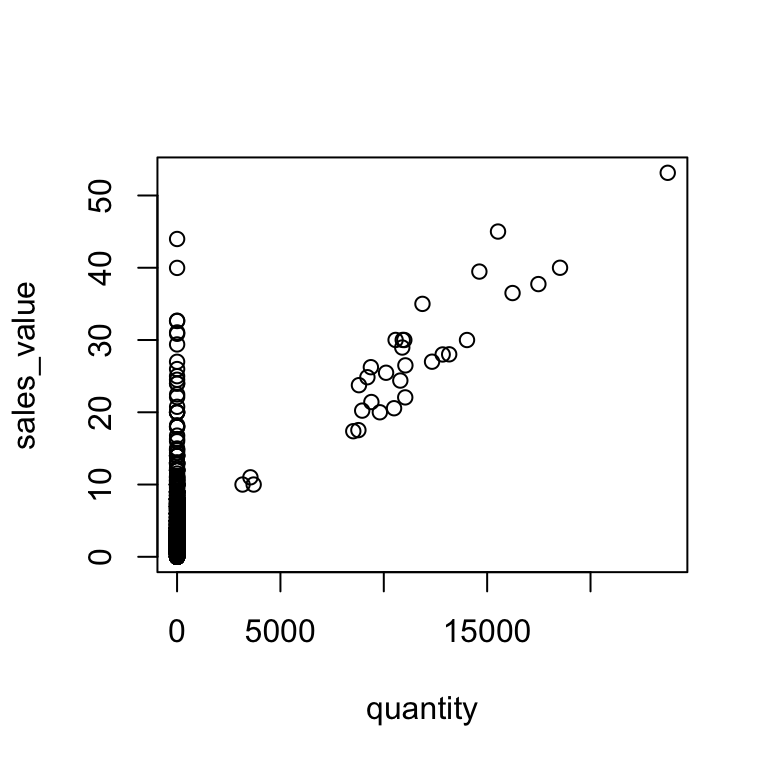
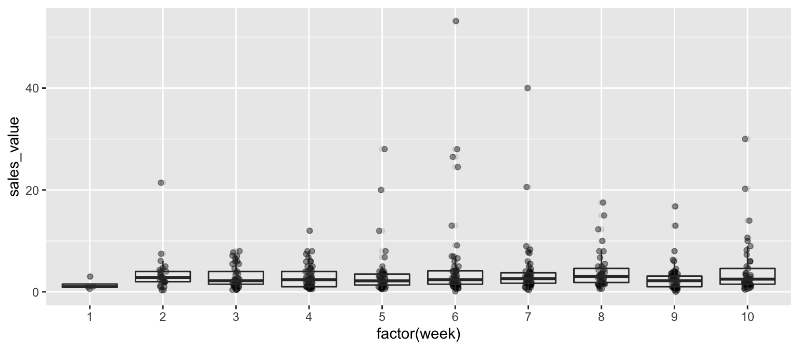

13 Lesson 3a: Pipe operator
Removing duplication is an important principle to keep in mind with your code; however, equally important is to keep your code efficient and readable. Efficiency is often accomplished by leveraging functions and iteration in your code (which we cover later in this class). However, efficiency also includes eliminating the creation and saving of unnecessary objects that often result when you are trying to make your code more readable, clear, and explicit. Consequently, writing code that is simple, readable, and efficient is often considered contradictory. For this reason, the magrittr package is a powerful tool to have in your data wrangling toolkit.
The magrittr package was created by Stefan Milton Bache and, in Stefan’s words, has two primary aims: “to decrease development time and to improve readability and maintainability of code.” Hence, it aims to increase efficiency and improve readability; and in the process it greatly simplifies your code. This lesson covers the basics of the magrittr toolkit.
The primary function in the magrittr package is the
pipe operator (%>%), this operator has been incorporated
in many packages and you will see it used
often throughout this class.
13.1 Learning objectives
Upon completing this module you will be able to:
- Explain the different approaches commonly used to chain multiple expressions together.
- Understand how the pipe (
%>%) operator works along with some alternative pipe operators.
13.2 Pipe (%>%) operator
The principal function provided by the magrittr package is %>%, or what’s called the “pipe” operator. This operator will forward a value, or the result of an expression, into the next function call/expression. For instance a function to filter data can be written as:
filter(data, variable == numeric_value)
or
data %>% filter(variable == numeric_value)
Both functions complete the same task and the benefit of using %>% may not be immediately evident; however, when you desire to perform multiple functions its advantage becomes obvious. For instance, if we want to filter some data, group it by categories, summarize it, and then order the summarized results we could write it out three different ways.
Don’t worry about the details of this code, this is mainly for illustration purposes. You will learn all about these functions in later lessons!
Nested Option:
# provides the various arrange, summarize, etc functions
library(dplyr)
# perform nested functions
arrange(
summarize(
group_by(
filter(df, quantity > 1),
store_id
),
avg_sales = mean(sales_value)
),
desc(avg_sales)
)
## # A tibble: 188 × 2
## store_id avg_sales
## <chr> <dbl>
## 1 736 86.0
## 2 197 43.5
## 3 901 43.5
## 4 2903 43
## 5 476 32.8
## 6 634 25.7
## 7 3149 24.9
## 8 3479 19.6
## 9 656 19.1
## 10 3131 15
## # … with 178 more rowsThis first option is considered a “nested” option such the functions are nested within one another. Historically, this has been the traditional way of integrating code; however, it becomes extremely difficult to read what exactly the code is doing and it also becomes easier to make mistakes when making updates to your code. Although not in violation of the DRY principle6, it definitely violates the basic principle of readability and clarity, which makes communication of your analysis more difficult. To make things more readable, people often move to the following approach…
Multiple Object Option:
a <- filter(df, quantity > 1)
b <- group_by(a, store_id)
c <- summarise(b, avg_sales = mean(sales_value))
d <- arrange(c, desc(avg_sales))
print(d)
## # A tibble: 188 × 2
## store_id avg_sales
## <chr> <dbl>
## 1 736 86.0
## 2 197 43.5
## 3 901 43.5
## 4 2903 43
## 5 476 32.8
## 6 634 25.7
## 7 3149 24.9
## 8 3479 19.6
## 9 656 19.1
## 10 3131 15
## # … with 178 more rowsThis second option helps in making the data wrangling steps more explicit and obvious but definitely violates the DRY principle. By sequencing multiple functions in this way you are likely saving multiple outputs that are not very informative to you or others; rather, the only reason you save them is to insert them into the next function to eventually get the final output you desire. This inevitably creates unnecessary copies and wrecks havoc on properly managing your objects…basically it results in a global environment charlie foxtrot! To provide the same readability (or even better), we can use %>% to string these arguments together without unnecessary object creation…
%>% Option:
df %>%
filter(quantity > 1) %>%
group_by(store_id) %>%
summarise(avg_sales = mean(sales_value)) %>%
arrange(desc(avg_sales))
## # A tibble: 188 × 2
## store_id avg_sales
## <chr> <dbl>
## 1 736 86.0
## 2 197 43.5
## 3 901 43.5
## 4 2903 43
## 5 476 32.8
## 6 634 25.7
## 7 3149 24.9
## 8 3479 19.6
## 9 656 19.1
## 10 3131 15
## # … with 178 more rowsThis final option which integrates %>% operators makes for more efficient and legible code. Its efficient in that it doesn’t save unnecessary objects (as in option 2) and performs as effectively (as both option 1 & 2) but makes your code more readable in the process. Its legible in that you can read this as you would read normal prose (we read the %>% as “and then”): “take df and then filter and then group by and then summarize and then arrange.”
Notice how above we didn’t have to load the magrittr
package to use the pipe operator (%>%)? This is because
the pipe operator has been incorporated into the dplyr
package and since we loaded that package we have direct access to
%>%. In fact, all tidyverse packages have
incorporated the pipe operator.
And since R is a functional programming language, meaning that everything you do is basically built on functions, you can use the pipe operator to feed into just about any argument call. For example, we can pipe into a linear regression function and then get the summary of the regression parameters. Note in this case I insert “data = .” into the lm() function. When using the %>% operator the default is the argument that you are forwarding will go in as the first argument of the function that follows the %>%. However, in some functions the argument you are forwarding does not go into the default first position. In these cases, you place “.” to signal which argument you want the forwarded expression to go to.
df %>%
filter(store_id == "367") %>%
lm(sales_value ~ week + retail_disc, data = .) %>%
summary()
##
## Call:
## lm(formula = sales_value ~ week + retail_disc, data = .)
##
## Residuals:
## Min 1Q Median 3Q Max
## -8.62 -2.19 -1.16 0.34 47.42
##
## Coefficients:
## Estimate Std. Error t value Pr(>|t|)
## (Intercept) 3.10845 0.20549 15.13 <2e-16 ***
## week 0.00185 0.00641 0.29 0.77
## retail_disc 1.09089 0.10396 10.49 <2e-16 ***
## ---
## Signif. codes: 0 '***' 0.001 '**' 0.01 '*' 0.05 '.' 0.1 ' ' 1
##
## Residual standard error: 4.5 on 2126 degrees of freedom
## Multiple R-squared: 0.0493, Adjusted R-squared: 0.0484
## F-statistic: 55.1 on 2 and 2126 DF, p-value: <2e-16You can also use %>% to feed into plots:
You will learn more about plotting techniques in week 5.
# visualization package
library(ggplot2)
df %>%
filter(store_id == "367", week <= 10) %>%
ggplot(aes(x = factor(week), y = sales_value)) +
geom_jitter(width = .05, alpha = .4) +
geom_boxplot(alpha = .1)13.3 Additional pipe operators (optional)
You should only review this section after you have a firm grasp on how to perform basic data transformation and tidying procedures. Consequently, this is a good section to come back to later in the week. Don’t worry, you will not be quizzed on any of the content that follows!
magrittr also offers some alternative pipe operators. Some functions, such as plotting functions, will cause the string of piped arguments to terminate. The tee (%T>%) operator allows you to continue piping functions that normally cause termination.
# normal piping terminates with the plot() function resulting in
# NULL results for the summary() function
df %>%
filter(store_id == "367") %>%
select(quantity, sales_value) %>%
plot() %>%
summary()
## Length Class Mode
## 0 NULL NULL# load magrittr to use additional pipe operators
library(magrittr)
# inserting %T>% allows you to plot and perform the functions that
# follow the plotting function
df %>%
filter(store_id == "367") %>%
select(quantity, sales_value) %T>%
plot() %>%
summary()
## quantity sales_value
## Min. : 0 Min. : 0.00
## 1st Qu.: 1 1st Qu.: 1.49
## Median : 1 Median : 2.50
## Mean : 166 Mean : 3.62
## 3rd Qu.: 1 3rd Qu.: 3.99
## Max. :23735 Max. :53.14The compound assignment %<>% operator is used to update a value by first piping it into one or more expressions, and then assigning the result. For instance, let’s say you want to transform the sales_value variable to a logarithmic measurement. Using %<>% will perform the functions to the right of %<>% and save the changes these functions perform to the variable or data frame called to the left of %<>%.
# note that sales_value is in its typical measurement
head(df$sales_value)
## [1] 3.86 1.59 1.00 11.87 1.29 2.50
# we can log transform sales_value and save this change using %<>%
df$sales_value %<>% log
head(df$sales_value)
## [1] 1.35067 0.46373 0.00000 2.47401 0.25464 0.91629
You should be cautious in your use of %<>% since
it does not change the name of the variable
and you are overwriting the original
variable’s values.
Some functions (e.g. lm, aggregate, cor) have a data argument, which allows the direct use of names inside the data as part of the call. The exposition (%$%) operator is useful when you want to pipe a data frame, which may contain many columns, into a function that is only applied to some of the columns. For example, the correlation (cor) function only requires an x and y argument so if you pipe the customer transaction data into the cor function using %>% you will get an error because cor doesn’t know how to handle df. However, using %$% allows you to say “take this data frame and then perform cor() on these specified columns within df.”
# regular piping results in an error
df %>%
filter(store_id == "367") %>%
cor(retail_disc, quantity)
## Error in pmatch(use, c("all.obs", "complete.obs", "pairwise.complete.obs", : object 'quantity' not found
# using %$% allows you to specify variables of interest
df %>%
filter(store_id == "367") %$%
cor(retail_disc, quantity)
## [1] 0.1026313.4 Additional resources
The magrittr package and its pipe operators are a great tool for making your code simple, efficient, and readable. There are limitations, or at least suggestions, on when and how you should use the operators. Garrett Grolemund and Hadley Wickham offer some advice on the proper use of pipe operators in their R for Data Science book. However, the %>% has greatly transformed our ability to write “simplified” code in R. As the pipe gains in popularity you will likely find it in more future packages and being familiar will likely result in better communication of your code.
Some additional resources regarding magrittr and the pipe operators you may find useful:
- The magrittr vignette (
vignette("magrittr")) in your console) provides additional examples of using pipe operators and functions provided by magrittr. - A blog post by Stefan Milton Bache regarding the past, present and future of magrittr
- magrittr questions on Stack Overflow
- The
ensurerpackage, also written by Stefan Milton Bache, provides a useful way of verifying and validating data outputs in a sequence of pipe operators.
Don’t repeat yourself (DRY) is a software development principle aimed at reducing repetition. Formulated by Andy Hunt and Dave Thomas in their book The Pragmatic Programmer, the DRY principle states that “every piece of knowledge must have a single, unambiguous, authoritative representation within a system.” This principle has been widely adopted to imply that you should not duplicate code. Although the principle was meant to be far grander than that, there’s plenty of merit behind this slight misinterpretation.↩︎